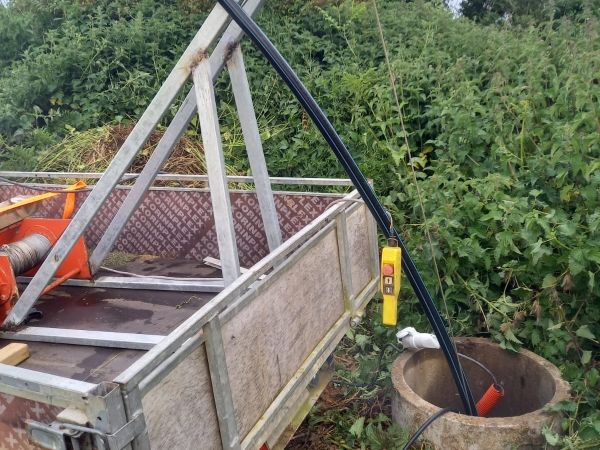

Dépannage de pompe de puits et de forage dans le Finistère
Plus d'eau, plus de pression, pompe qui disjoncte ? Appelez : on fait le diagnostic par téléphone, puis on intervient sur place pour remettre votre eau en service.

Les pannes que nous dépannons
- Plus d'eau au robinet
- Perte de pression ou débit irrégulier
- Pompe qui démarre sans arrêt ou ne s'arrête plus
- Disjoncteur qui saute
- Bruit inhabituel, eau trouble ou chargée en air
- Réservoir à vessie ou pressostat défaillant
Pompes immergées, de surface, surpresseurs
Nous intervenons sur tous les types de pompes de puits et de forage, que nous les ayons installées ou non. Nous intervenons en dépannage dans tout le Finistère : Abers, Côte des Légendes, Iroise, Brest, Landerneau, Léon, Morlaix, Crozon, Châteaulin et Quimper.
Notre façon de travailler
Un seul interlocuteur, du premier appel jusqu'au suivi de votre installation.
- 1
Vous appelez, on fait le diagnostic
Vous décrivez la situation par téléphone. On identifie la piste la plus probable et on intervient sur place pour confirmer.
- 2
On résout le problème
Réparation, remplacement ou installation : on remet votre eau en service, avec un devis clair si du matériel est nécessaire.
- 3
On pense à la suite
Une fois l'urgence réglée, on réfléchit avec vous au court et au long terme : entretien, traitement de l'eau, prévention des pannes.
Vos questions sur le dépannage de pompe
Ma pompe ne démarre plus, que faire ?
Vérifiez d'abord le disjoncteur et l'alimentation électrique. Si la pompe ne repart pas ou disjoncte à nouveau, ne forcez pas : appelez-nous, on fait un premier diagnostic par téléphone puis on intervient sur place.
Pourquoi ma pompe démarre-t-elle sans arrêt ?
C'est souvent lié au réservoir à vessie (pression de gonflage), au pressostat ou à une fuite sur le réseau. Une pompe qui démarre trop souvent s'use vite : mieux vaut la faire contrôler rapidement.
Pourquoi n'ai-je plus de pression au robinet ?
Filtre colmaté, pompe usée, réservoir dégonflé, niveau d'eau trop bas dans le puits ou fuite : le diagnostic sur place permet de trouver la cause exacte et d'éviter de changer une pièce pour rien.
Faut-il réparer ou remplacer la pompe ?
On vous dit franchement ce qui est le plus raisonnable selon l'âge de la pompe, la panne et le coût de la réparation. Si un remplacement est nécessaire, vous avez un devis avant.